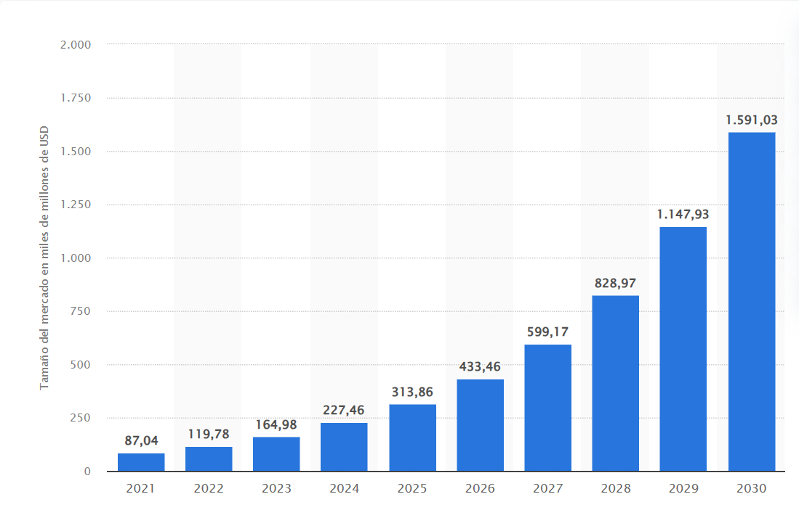

La revolución de la Inteligencia Artificial en el mundo empresarial
La Inteligencia Artificial (IA) ha emergido como una fuerza imparable que ha transformado radicalmente la forma en que las empresas funcionan y prosperan en el entorno empresarial actual. Esta sección introductoria nos sumergirá en el emocionante mundo de la IA empresarial, explorando cómo esta tecnología ha irrumpido en el ámbito de los negocios, ofreciendo capacidades sorprendentes para el análisis de datos, la automatización de procesos y la toma de decisiones precisa. También examinaremos cómo las organizaciones están constantemente buscando nuevas y emocionantes formas de aprovechar la IA para mantenerse competitivas y satisfacer las demandas cambiantes de sus respectivas industrias.
El auge de la Inteligencia Artificial en la era empresarial
La Inteligencia Artificial (IA) ha experimentado una transformación impresionante en las últimas décadas, pasando de ser un concepto futurista a convertirse en una realidad tangible y fundamental en el mundo empresarial. Este cambio ha sido impulsado por un aumento exponencial en la capacidad de procesamiento de datos y el desarrollo de algoritmos avanzados, que han permitido a la IA realizar tareas que antes eran exclusivas de las habilidades humanas.
Hoy en día, la IA no es simplemente una tecnología periférica, sino que se encuentra en el núcleo mismo de muchas operaciones empresariales exitosas. Se ha convertido en un componente integral de la estrategia comercial de numerosas organizaciones, independientemente de su tamaño o industria. Esto se debe a que la IA no solo automatiza procesos, sino que también mejora la toma de decisiones, impulsa la eficiencia y proporciona ventajas competitivas.
La IA ha demostrado ser una herramienta versátil y adaptable que abarca diversas aplicaciones en el mundo empresarial. Desde la atención al cliente y la gestión de la cadena de suministro hasta el análisis de datos y la personalización de productos y servicios, la IA está en todas partes, transformando la forma en que las empresas operan y se relacionan con sus clientes.
Un ejemplo destacado de esta transformación es la aplicación de la IA en el análisis de datos. Las capacidades de aprendizaje automático y análisis predictivo de la IA permiten a las empresas extraer conocimientos valiosos de grandes conjuntos de datos, identificando patrones, tendencias y oportunidades que de otro modo pasarían desapercibidos. Esto no solo facilita la toma de decisiones basadas en datos, sino que también potencia la innovación y la mejora continua.
Transformación de los procesos empresariales mediante la IA
La inteligencia artificial (IA) ha abierto un nuevo horizonte en la automatización de procesos empresariales, impulsando una transformación sin precedentes. Tareas rutinarias y repetitivas que en el pasado consumían valioso tiempo y recursos humanos pueden ser ahora ejecutadas de manera eficiente por sistemas de IA de alto rendimiento. Esta revolución en la automatización libera a los empleados para enfocarse en tareas de mayor valor, como la creatividad, la innovación y la toma de decisiones estratégicas.
La IA ha llegado para redefinir cómo las empresas gestionan sus operaciones diarias. En lugar de perder horas en actividades monótonas, los empleados pueden dedicar su energía a desafíos más estimulantes que requieren habilidades humanas, como la resolución de problemas complejos y la colaboración estratégica.
Un ejemplo impactante de esta transformación es la automatización de procesos de atención al cliente. Los chatbots basados en IA pueden responder preguntas comunes y resolver problemas de manera eficiente, brindando asistencia las 24 horas del día, los 7 días de la semana, sin la necesidad de intervención humana. Esto no solo mejora la satisfacción del cliente, sino que también libera al personal para abordar casos más complejos y significativos.
Además, en el ámbito financiero, la IA ha revolucionado el procesamiento de datos de facturas y documentos. Los sistemas de IA son capaces de extraer y procesar información financiera de manera precisa y rápida, lo que reduce significativamente el riesgo de errores humanos y acelera los flujos de trabajo contables.
En resumen, la IA no solo está automatizando procesos empresariales, sino que está liberando el potencial humano para la innovación y la toma de decisiones estratégicas. Este cambio hacia una mayor eficiencia y productividad está redefiniendo la forma en que las empresas operan y se adaptan en la era digital.
La IA como motor de la toma de decisiones
Uno de los logros más notables de la IA es su capacidad para analizar grandes volúmenes de datos y proporcionar información valiosa en tiempo real. Esto ha mejorado significativamente la toma de decisiones estratégicas en las empresas. Los líderes empresariales pueden confiar en la IA para identificar tendencias, predecir resultados y optimizar sus estrategias comerciales con un nivel de precisión que antes era inimaginable.
El camino hacia la competitividad
A medida que la tecnología continúa avanzando, las organizaciones buscan constantemente formas innovadoras de utilizar la IA para mantenerse competitivas en sus respectivas industrias. Aquellas que adoptan y aprovechan eficazmente la IA pueden ofrecer productos y servicios más personalizados, optimizar sus operaciones internas y permanecer ágiles en un mundo empresarial en constante cambio.
En las secciones siguientes de este artículo, exploraremos en detalle las diversas aplicaciones de la IA en los negocios y cómo estas están transformando sectores enteros. También examinaremos ejemplos concretos de empresas líderes que han logrado un éxito notable gracias a la implementación efectiva de la IA en sus operaciones.
Análisis de datos avanzado con Inteligencia Artificial
El análisis de datos es una de las aplicaciones más destacadas de la Inteligencia Artificial (IA) en el ámbito empresarial. Las empresas han comenzado a aprovechar algoritmos de IA para procesar grandes volúmenes de información y obtener perspectivas valiosas que les permiten tomar decisiones más informadas y estratégicas. Veamos con más detalle cómo la IA revoluciona el análisis de datos:
Personalización y precisión en la industria de seguros
En la industria de seguros, la IA desempeña un papel crucial en la evaluación de riesgos y la determinación de primas de seguros de manera precisa. Algunos ejemplos notables incluyen:
Modelos de riesgo avanzados: La IA permite a las aseguradoras desarrollar modelos de riesgo más sofisticados que consideran una amplia gama de variables, desde datos demográficos hasta tendencias climáticas, para determinar las primas de manera más justa y precisa.
Prevención de Fraude: Los algoritmos de IA pueden identificar patrones de fraude y comportamientos sospechosos en las reclamaciones de seguros, lo que ayuda a reducir las pérdidas y los costos asociados con el fraude.
Experiencia del cliente: La personalización basada en IA permite a las aseguradoras ofrecer a los clientes pólizas adaptadas a sus necesidades individuales, lo que aumenta la satisfacción y la retención del cliente.
Optimización de ventas y experiencia del cliente en el comercio minorista
En el comercio minorista en línea, la IA es esencial para el análisis de datos orientado a la mejora de las ventas y la experiencia del cliente:
Análisis de patrones de compra: La IA puede analizar el historial de compras de los clientes y predecir qué productos son más propensos a comprar en el futuro, lo que permite a las tiendas en línea ofrecer recomendaciones personalizadas.
Segmentación de clientes: Los algoritmos de segmentación basados en IA permiten a las empresas dirigir sus campañas de marketing de manera más efectiva, adaptando los mensajes y ofertas a grupos específicos de clientes.
Optimización de precios: Los minoristas pueden ajustar dinámicamente los precios de sus productos en función de la demanda y la competencia, maximizando así sus ingresos.
Estos ejemplos demuestran cómo la IA está impulsando la toma de decisiones empresariales basadas en datos y mejorando la eficiencia y la rentabilidad en diversas industrias.
Automatización de procesos empresariales con inteligencia artificial
La inteligencia artificial (IA) está desempeñando un papel transformador en la forma en que las empresas gestionan sus procesos y operaciones. La automatización de procesos empresariales es una de las áreas clave en las que la IA está generando un impacto significativo. A través de la IA, las empresas pueden lograr una eficiencia sin precedentes, reducir costos y liberar recursos para tareas más estratégicas. En este artículo, exploraremos cómo la IA está revolucionando la automatización de procesos empresariales y cuáles son algunos de sus casos de uso más destacados.
Automatización de la atención al cliente
Una de las aplicaciones más notables de la IA en la automatización empresarial es la atención al cliente. Las empresas están utilizando chatbots basados en IA para brindar atención al cliente las 24 horas del día, los 7 días de la semana. Estos chatbots no solo son capaces de responder preguntas comunes, sino que también pueden resolver problemas y dirigir a los clientes a los recursos adecuados sin intervención humana. Esto no solo mejora la experiencia del cliente, sino que también reduce la carga de trabajo del personal de atención al cliente.
Procesamiento automatizado de facturas
Otro ejemplo destacado es el procesamiento automatizado de facturas y documentos financieros. La IA se utiliza para automatizar la extracción y el procesamiento de datos de facturas, acelerando los flujos de trabajo contables y reduciendo significativamente los errores humanos en la entrada de datos. Esto no solo ahorra tiempo, sino que también mejora la precisión en la gestión financiera de una empresa.
Automatización de procesos de manufactura
En la industria manufacturera, los robots y sistemas de IA están desempeñando un papel esencial en la automatización de tareas de ensamblaje y control de calidad. Estos sistemas pueden operar de manera autónoma, lo que aumenta la velocidad y la precisión de la producción. La IA también se utiliza para el mantenimiento predictivo, ayudando a prevenir fallas en la maquinaria y reduciendo el tiempo de inactividad.
Optimización de la cadena de suministro
La cadena de suministro es otro ámbito donde la IA está generando un impacto importante. Las empresas utilizan la IA para predecir la demanda de productos, optimizar las rutas de envío y gestionar los niveles de inventario de manera eficiente. Esto no solo reduce los costos operativos, sino que también mejora la capacidad de respuesta ante cambios en la demanda del mercado.
La automatización de procesos impulsada por la IA está cambiando fundamentalmente la forma en que las empresas operan. Les permite ser más ágiles y competitivas en un mundo empresarial en constante cambio. Sin embargo, es importante tener en cuenta que, junto con los beneficios, también surgen desafíos, como la seguridad de los datos y la necesidad de capacitación de la fuerza laboral. Las empresas que aborden estos desafíos de manera efectiva estarán mejor preparadas para aprovechar al máximo el potencial de la IA en la automatización de procesos empresariales.
Ejemplo de Éxito: IBM Watson en el diagnóstico médico
IBM Watson es un ejemplo sobresaliente del impacto transformador de la Inteligencia Artificial en el ámbito médico. Esta plataforma ha revolucionado la práctica médica al proporcionar a médicos y especialistas una herramienta poderosa para tomar decisiones más precisas y basadas en datos. Vamos a explorar cómo IBM Watson ha dejado su huella en la medicina:
Diagnóstico preciso y detección temprana de enfermedades
Una de las capacidades sobresalientes de IBM Watson es su habilidad para analizar enormes cantidades de datos médicos, que incluyen historiales de pacientes, informes de laboratorios y literatura médica. Esta capacidad se ha utilizado para mejorar significativamente el diagnóstico de enfermedades, especialmente en la detección temprana de condiciones graves como el cáncer.
En el caso del cáncer, Watson puede analizar imágenes médicas, como escáneres y radiografías, y compararlas con una vasta base de datos de casos anteriores. Esto le permite identificar incluso las anomalías más sutiles que podrían pasar desapercibidas para médicos humanos. La detección temprana es fundamental para el éxito en el tratamiento del cáncer, y IBM Watson ha demostrado ser una herramienta invaluable para lograr este objetivo.
Mejora continua a través del aprendizaje automático
Una característica destacada de IBM Watson es su capacidad de aprendizaje automático. A medida que procesa más datos y casos, la plataforma se vuelve más inteligente y precisa con el tiempo. Esto significa que su capacidad de diagnóstico y recomendación de tratamientos sigue mejorando constantemente, lo que beneficia tanto a los pacientes como a los profesionales de la salud.
Por ejemplo, en un estudio reciente, Watson logró aumentar la precisión del diagnóstico de ciertos tipos de cáncer en un 15% en comparación con los métodos tradicionales. Esta mejora significativa ha tenido un impacto directo en la vida y el bienestar de los pacientes.
Impacto en la salud y el bienestar
El uso de IBM Watson ha tenido un impacto significativo en la salud y el bienestar de las personas. Los diagnósticos más rápidos y precisos han llevado a un tratamiento más oportuno y efectivo. Esto, a su vez, ha mejorado las tasas de supervivencia de los pacientes y ha reducido los costos asociados con la atención médica. Además, ha brindado a los médicos una herramienta valiosa para la toma de decisiones informadas y la planificación de tratamientos personalizados.
Un ejemplo concreto de su impacto es el caso de una paciente que fue diagnosticada por IBM Watson con una enfermedad rara que previamente había sido pasada por alto. Gracias al diagnóstico temprano, se pudo proporcionar el tratamiento adecuado a tiempo, lo que mejoró significativamente su calidad de vida.
Conclusiones
El caso de IBM Watson en el campo de la medicina destaca cómo la Inteligencia Artificial puede marcar la diferencia en la vida de las personas y transformar industrias enteras. Su capacidad para analizar datos médicos de manera rápida y precisa representa un avance revolucionario que continúa mejorando la atención médica en todo el mundo. IBM Watson es un testimonio del potencial sin límites de la IA y su capacidad para salvar vidas y mejorar la calidad de atención médica.
Gráfico: evolución de la inversión en Inteligencia Artificial (IA)
La Inteligencia Artificial (IA) es una de las tendencias tecnológicas más impactantes y disruptivas del siglo XXI. En los últimos años, la inversión en IA ha experimentado un crecimiento exponencial, y este fenómeno ha dejado una huella imborrable en diversos sectores empresariales. En el siguiente gráfico, podemos observar la notable evolución de la inversión en IA en la última década:

Figura 1: Evolución de la inversión en IA en los últimos diez años.
Este crecimiento constante en la inversión en IA no es casualidad; se basa en una serie de factores que han convergido para impulsar esta revolución tecnológica:
Avances Tecnológicos: La IA se ha beneficiado enormemente de los avances en hardware y software. La disponibilidad de unidades de procesamiento gráfico (GPU) de alto rendimiento y algoritmos de aprendizaje profundo ha permitido el desarrollo de modelos de IA más sofisticados.
Big Data: La explosión de datos digitales ha proporcionado a la IA una cantidad sustancial de información para el entrenamiento y la toma de decisiones. Empresas de todo el mundo han acumulado grandes volúmenes de datos que alimentan algoritmos de IA.
Competitividad Empresarial: La IA se ha convertido en un elemento clave para la ventaja competitiva. Las organizaciones que adoptan la IA pueden automatizar tareas, mejorar la toma de decisiones y ofrecer productos y servicios más personalizados, lo que les permite destacar en sus respectivas industrias.
Aplicaciones Innovadoras: La IA no solo ha mejorado las operaciones empresariales, sino que también ha impulsado la creación de productos y servicios innovadores. Desde vehículos autónomos hasta asistentes virtuales y diagnóstico médico de precisión, las aplicaciones de IA son diversas y emocionantes.
Es importante destacar que la inversión en IA no está limitada a gigantes tecnológicos. Empresas de todos los tamaños y sectores han reconocido el valor estratégico de la IA y han destinado recursos significativos para su desarrollo y aplicación.
La gráfica también revela que el crecimiento de la inversión en IA está lejos de alcanzar su límite. A medida que la IA continúa madurando, se esperan desarrollos aún más emocionantes. Se prevé su integración en una variedad de industrias, desde la atención médica hasta la movilidad y la energía, lo que promete transformar fundamentalmente la forma en que vivimos y trabajamos.
La IA no solo está revolucionando la forma en que las empresas operan, sino que también está impactando profundamente la sociedad en su conjunto. Desde la atención médica más precisa y accesible hasta la optimización de procesos industriales, la IA está mejorando la calidad de vida y la eficiencia en todo el mundo.
En conclusión, la evolución de la inversión en IA representa un capítulo emocionante en la historia de la tecnología. A medida que la comunidad global de investigación y desarrollo continúa colaborando y explorando los límites de la IA, podemos anticipar un futuro impulsado por la innovación y la automatización inteligente que cambiará la forma en que vivimos y trabajamos de manera profunda e irreversible.
Referencias y citas
A lo largo de este artículo, se han mencionado ejemplos y estadísticas relevantes. A continuación, se proporcionan algunas referencias y citas para obtener más información sobre el tema:
IBM: AI for Business
El sitio web oficial de IBM ofrece una amplia gama de recursos sobre cómo la Inteligencia Artificial está transformando los negocios. En la sección "AI for Business", encontrarás estudios de caso detallados, informes técnicos y ejemplos concretos de cómo las empresas están aprovechando la IA para lograr el éxito.
Harvard Business Review: Artificial Intelligence for the Real World
La Harvard Business Review ha publicado un artículo informativo titulado "Artificial Intelligence for the Real World". En este artículo, se ofrece una visión profunda sobre la aplicación práctica de la Inteligencia Artificial en entornos empresariales. Explora casos reales de empresas que han implementado con éxito la IA y cómo ha impactado en sus operaciones y estrategias comerciales.
McKinsey & Company: Artificial Intelligence in Business: Separating the Real from the Hype
McKinsey & Company ha realizado una extensa investigación sobre el impacto de la Inteligencia Artificial en los negocios. Su informe "Artificial Intelligence in Business: Separating the Real from the Hype" es una lectura fundamental para aquellos interesados en comprender cómo las empresas pueden aprovechar al máximo la IA.
Estas referencias y citas ofrecen una visión integral de cómo la Inteligencia Artificial está impactando en el mundo empresarial y proporcionan recursos adicionales para aquellos que deseen explorar más a fondo este tema.
IA para Programadores
La Inteligencia Artificial (IA) es un campo en constante crecimiento que ha revolucionado la forma en que interactuamos con la tecnología. La IA se basa en la idea de crear sistemas y programas que pueden simular la inteligencia humana y tomar decisiones autónomas. Esto implica que la IA puede aprender de datos, razonar y resolver problemas de manera similar a los seres humanos, pero a una escala y velocidad que serían imposibles para una mente humana.
Para los programadores, la IA presenta oportunidades emocionantes y desafíos intrigantes. En este artículo, exploraremos cómo la IA se ha convertido en una herramienta esencial en el arsenal de un programador y cómo está transformando la industria de la tecnología.
Aplicaciones de la IA para programadores
Los programadores pueden aprovechar la IA en diversas áreas, lo que abre un mundo de posibilidades para la innovación y la automatización:
Aprendizaje automático: El aprendizaje automático (Machine Learning) es una rama fundamental de la IA que permite a los programas mejorar su rendimiento a medida que adquieren más datos. Los programadores pueden utilizar algoritmos de aprendizaje automático para desarrollar modelos predictivos y analizar datos complejos.
Procesamiento de lenguaje natural: El procesamiento de lenguaje natural (NLP) permite a las máquinas comprender y generar texto de manera inteligente. Los programadores pueden crear aplicaciones como chatbots y traductores automáticos que mejoran la comunicación entre humanos y máquinas.
Visión por computadora: La visión por computadora permite que las máquinas identifiquen objetos y patrones en imágenes y videos. Esto tiene aplicaciones en campos como la seguridad, la medicina y la automatización industrial.
Automatización de tareas: La IA se utiliza para automatizar tareas repetitivas y manuales. Los programadores pueden desarrollar sistemas que clasifican correos electrónicos, generan informes, administran inventarios y más, todo de manera autónoma.
Herramientas y recursos
Para empezar con la IA, los programadores tienen a su disposición una amplia gama de herramientas y recursos:
Frameworks de Aprendizaje Automático: TensorFlow, PyTorch y scikit-learn son ejemplos de frameworks populares que facilitan el desarrollo de modelos de aprendizaje automático.
Cursos en línea y Tutoriales: Plataformas como Coursera, edX y Udacity ofrecen cursos en línea sobre IA y aprendizaje automático impartidos por expertos en el campo.
Comunidades en línea: Participar en comunidades en línea como Stack Overflow y GitHub permite a los programadores aprender de otros, hacer preguntas y colaborar en proyectos de IA.
Libros y Documentación: Existen numerosos libros y recursos de documentación que cubren desde conceptos fundamentales hasta técnicas avanzadas en IA y aprendizaje automático.
El futuro de la IA y la programa
La Inteligencia Artificial (IA) se encuentra en un punto de inflexión en el que su evolución está destinada a transformar aún más nuestra sociedad y la forma en que vivimos y trabajamos. La rápida expansión de la IA es innegable, y los programadores desempeñan un papel fundamental en dar forma a este emocionante futuro.
A medida que las máquinas se vuelvan más inteligentes y sofisticadas, la IA seguirá expandiendo sus aplicaciones en el mundo de la programación. No se limitará a una única industria, sino que se extenderá a una amplia variedad de campos, desde la atención médica hasta el transporte y la energía. La IA ya está mejorando la eficiencia y la precisión en diagnósticos médicos, optimizando rutas de entrega y reduciendo el consumo de energía en edificios inteligentes.
Uno de los aspectos más emocionantes del futuro de la IA es su capacidad para fomentar la innovación. Los programadores estarán en la vanguardia de la creación de soluciones innovadoras que revolucionarán la forma en que vivimos y trabajamos. Esto incluye el desarrollo de vehículos autónomos que prometen un transporte más seguro y eficiente, así como sistemas de energía inteligente que ayudarán a mitigar los desafíos ambientales.
Sin embargo, a medida que la IA continúa su ascenso, también surgen desafíos éticos y sociales importantes. Los programadores enfrentarán la responsabilidad de desarrollar sistemas de IA éticos y responsables que no solo sean efectivos, sino también justos y equitativos. La privacidad de los datos y la toma de decisiones éticas serán temas cruciales que requerirán una atención cuidadosa.
En conclusión, el futuro de la IA es extraordinariamente prometedor y emocionante. Los programadores tienen la oportunidad única de liderar esta revolución tecnológica y moldear un mundo donde la IA mejore nuestras vidas de maneras que ni siquiera podemos imaginar hoy. Al abrazar los desafíos y mantener un enfoque en la ética, los programadores pueden garantizar que la IA continúe siendo una fuerza positiva y transformadora en la sociedad.
Retos y ética
A pesar de sus ventajas, la IA también plantea desafíos y cuestiones éticas importantes. Los programadores deben considerar la responsabilidad y la transparencia al desarrollar sistemas de IA para evitar sesgos y discriminación. La ética en la IA es un tema candente que involucra la toma de decisiones justas y la protección de la privacidad de los usuarios. Abordar estos desafíos es esencial para garantizar que la IA sea una fuerza positiva en la sociedad.
Conclusiones
En resumen, la Inteligencia Artificial (IA) ha emergido como una fuerza revolucionaria que ha transformado profundamente el panorama empresarial y la forma en que las organizaciones operan en la era digital. A lo largo de este artículo, hemos explorado cómo la IA ha impactado en múltiples aspectos de la vida empresarial y cómo su influencia sigue en constante expansión.
Algunas de las conclusiones clave incluyen:
Transformación de Procesos: La IA ha permitido la automatización de procesos en una escala sin precedentes, lo que ha aumentado la eficiencia operativa y ha liberado a los empleados de tareas repetitivas.
Análisis de Datos Avanzado: La capacidad de la IA para analizar grandes volúmenes de datos ha mejorado significativamente la toma de decisiones basadas en datos, lo que a su vez ha llevado a una mayor precisión en la estrategia empresarial.
Innovación Continua: La IA sigue siendo un campo en constante evolución con un potencial casi ilimitado. Las empresas que adoptan estrategias de IA de manera efectiva pueden mantenerse competitivas y seguir innovando en sus respectivas industrias.
Impacto en la Sociedad: La IA no solo ha transformado las empresas, sino que también ha tenido un impacto en la sociedad en su conjunto. Desde la atención médica más precisa hasta la optimización de procesos industriales, la IA está mejorando la calidad de vida y la eficiencia en todo el mundo.
Es importante destacar que el camino hacia la adopción efectiva de la IA no está exento de desafíos. Las cuestiones éticas, la seguridad de los datos y la necesidad de una planificación estratégica sólida son factores críticos que las empresas deben abordar para aprovechar al máximo esta tecnología.
En última instancia, la IA está en el centro de la próxima era empresarial, y las organizaciones que la abrazan de manera efectiva tienen la oportunidad de liderar la innovación y prosperar en un entorno empresarial en constante cambio.